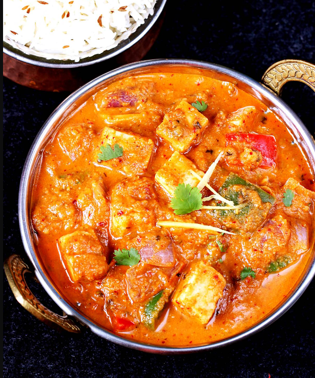

Kadai Panner

Description
Indian recipe for Kadai Paneer is a recipe using Indian style cottage cheese a.k.a Paneer which is a soft cheese that does not melt.
fresh cheese made by curdling milk with lemon juice or vinegar. Unlike American style cottage cheese that is loose and has individual curds, paneer is firm (like tofu), non-melting and can be easily cut into cubes.
Ingridents
- Coriander Seeds
- Dried red chilles
- Green caradamom
- Fennal seeds
- Cloves
Steps
- To a small kadai or pan, dry roast the spices for kadai masala for 3 to 4 minutes on medium heat until fragrant.Add more red chilies for a spicier masala.
- Remove kadai from heat and transfer the roasted spices to a spice grinder.
- Let it cool down a bit and then grind to a fine powder. Set aside. You can also make this kadai masala in advance and store it.
- In a large kadai or any other pan, now melt butter with oil on medium heat.
- Add the chopped onion and saute for 3 minutes until softened. Then add the sliced green chili and ginger garlic paste and saute for another 1 to 2 minutes.
- Then add the chopped tomatoes and tomato paste. Mix and cook for around 6 minutes until tomatoes are really soft.
- Then add 3 to 4 teaspoons of the kadai masala that you prepared earlier (or add the whole thing if you like it spicy). Also add the garam masala, kashmiri red chili powder.
- Add half of the ginger julienne. Stir the spices and cook for 30 seconds.
- Then add 1/2 cup water and stir.
- Add cream, salt and sugar and mix. Cook for one minute.
- Add in the paneer and bell peppers (capsicum) and mix. Cover the pan or kadai with a lid and cook for 5 to 6 minutes on medium heat until bell peppers are slightly softened. You only want them half cooked here
- Crush kasuri methi and add to the pan.
- Garnish with remaining ginger julienne and cilantro.
Serve kadai paneer with naan or paratha.